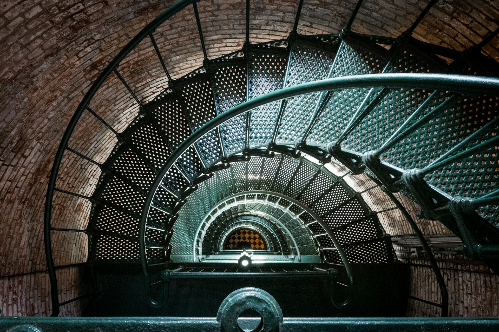

Currituck Beach Lighthouse
Built: 1873, Height: 161 ft. 220 Steps
Click the Images Below to View the History
A Need for a Light in Corolla
Built in 1873, the Currituck Lighthouse is operated by a private organization.

Interior view looking upward. Many shipwrecks occured on the shoals nearby which prompted Congress to commission the lighthouse. The most powerful Fresnel lens built, a 1st order, enabled the light to reach 18 miles out to sea.
The windows were positioned to face the shore in the lighthouse's tower. Along with the view from the top, this enabled
the keepers to watch incoming ships.
If any were in trouble, they could alert Currituck Beach Life Saving Station.
The most powerful Fresnel lens built, a 1st order, enabled the light to reach 18 miles out to sea.
The windows were positioned to face the shore in the lighthouse's tower. Along with the view from the top, this enabled
the keepers to watch incoming ships.
If any were in trouble, they could alert Currituck Beach Life Saving Station.